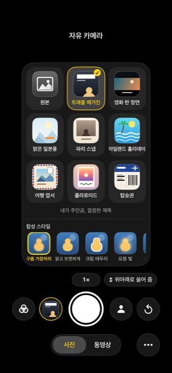
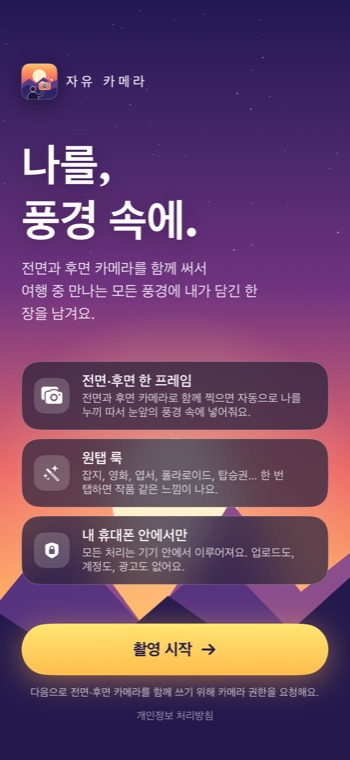
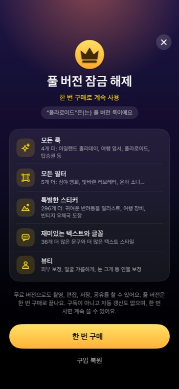
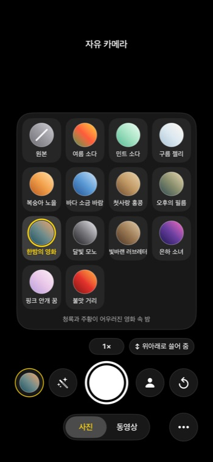
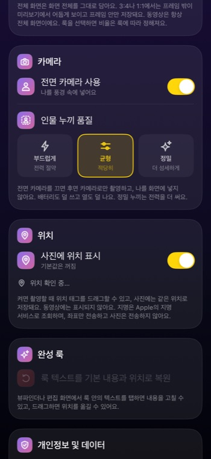

전면과 후면 카메라를 동시에 써서 여행지 풍경 속에 나를 담아 보세요. 혼자서도 내가 곧 포토그래퍼.



왼쪽에서 기능을 고르면 오른쪽 iPhone 화면이 바뀌어요.


사진은 iPhone 안에서만 처리되고 저장돼요. 계정도, 광고도, 분석도, 서버도 없어요. 뷰티에 쓰는 얼굴 포인트도 내 폰에만 남아요.
전면과 후면 카메라를 동시에 쓸 수 있는 iPhone(iPhone XS/XR 이후 대부분의 모델), iOS 17 이상이 필요해요